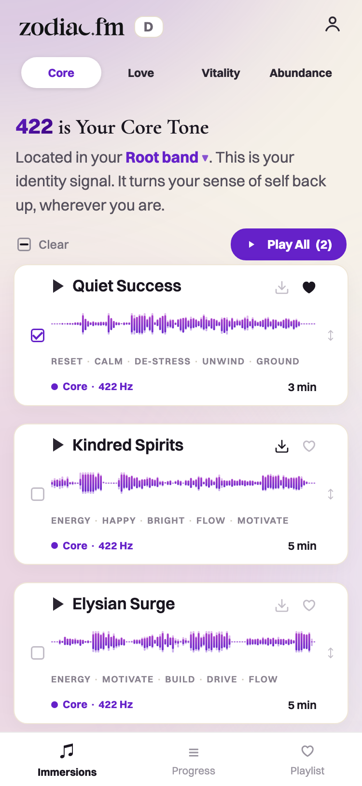
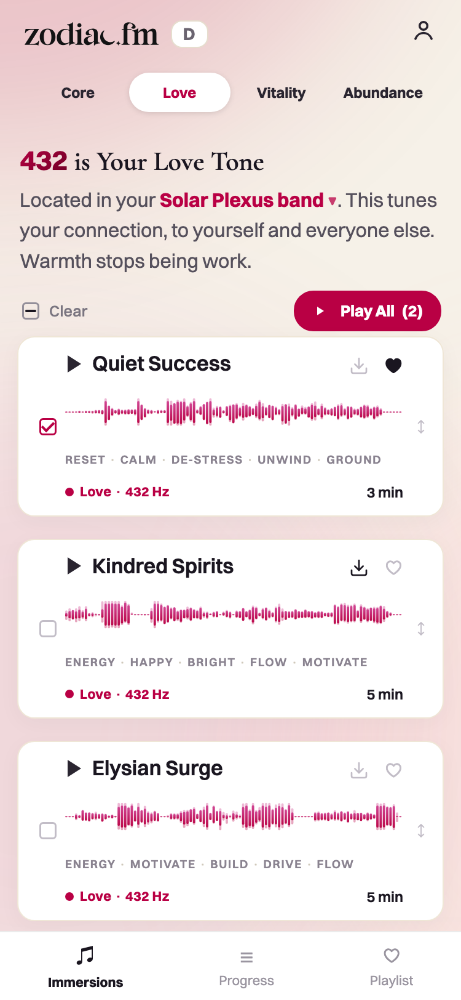
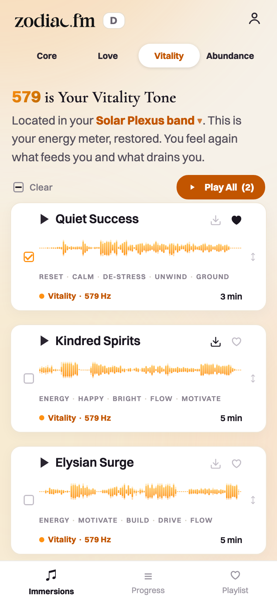
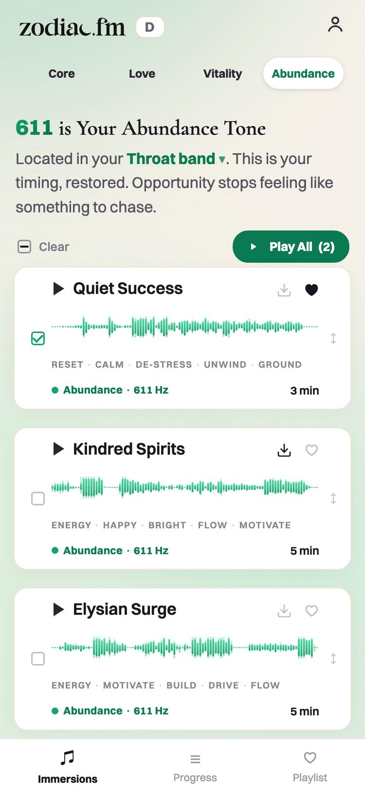
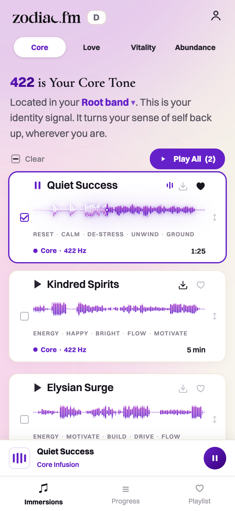
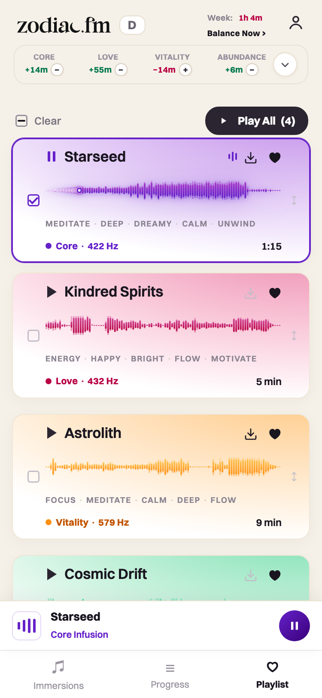
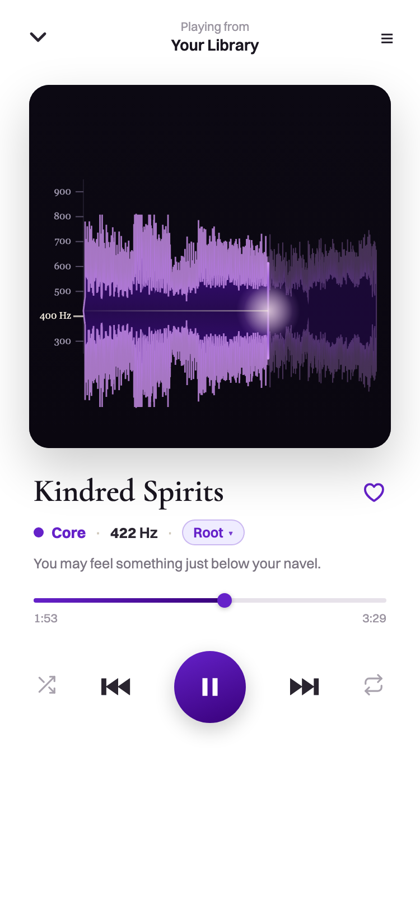
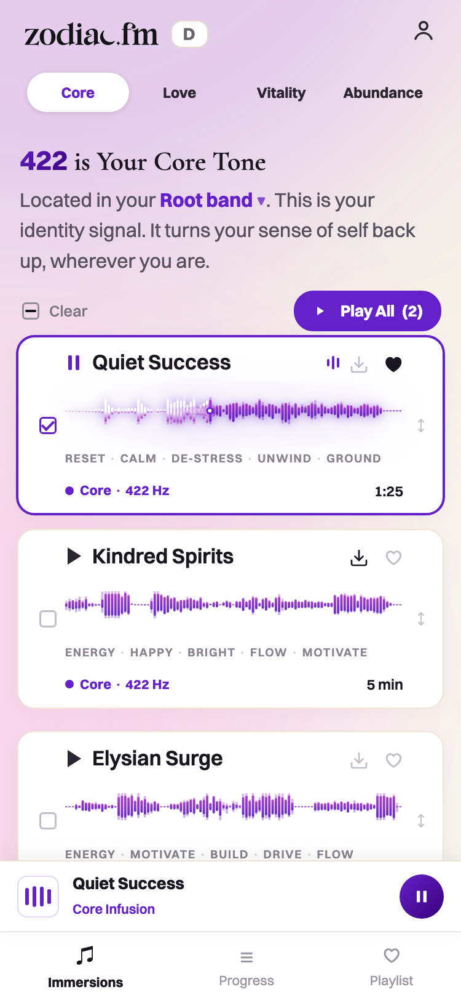
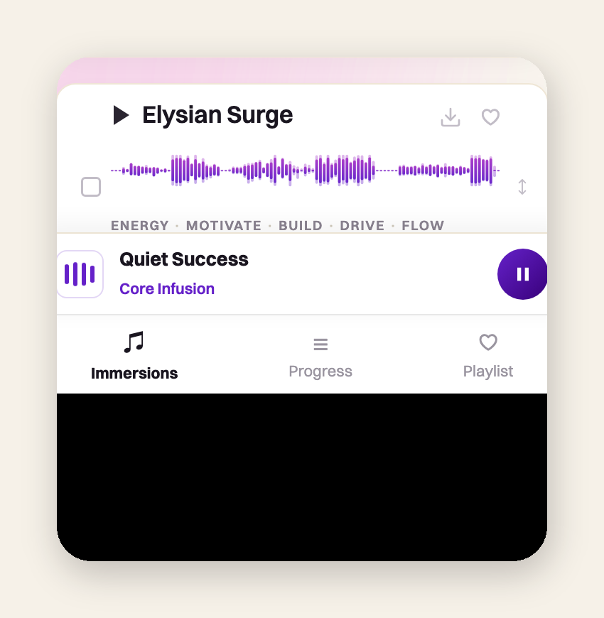

How Zodiac looks, everywhere.
The locked system in one place: the colors and how to spend them, the two typefaces and their strict jobs, the hierarchy laws, the app as it actually ships today, and the rules for every image and testimonial photo we put in front of a member. Canon lives in the vault (brand/design-system.md + design/tokens.json); this page renders it so anyone building can see it.
Premium is restraint, not decoration.
Celestial and sonic, gradient-forward but clean, calm, lightly mystical. Never hypey, never cluttered. Readability and hierarchy come before every aesthetic choice: the system's first job is to be effortless to read on a phone.
White ground, one accent
Bleach and Cream carry the page. Core Purple is the single structural accent everywhere, marketing and app alike. The four frequency colors are jewels: 10% of any surface, never floods.
Calm on marketing, nuanced in-app
Landers and the quiz stay quiet: white, serif headline, one purple moment. Inside the app the surface tints to the active frequency and the auras breathe. Same system, two volumes.
The defaultness test
An element is slop when it exists because a model defaults to it, not because we chose it. Our violet gradients and auras are chosen, token-locked and gated; a centered hero with twin buttons and a three-icon grid is slop even in our palette.
Real everything
Real logo asset, real waveforms computed from the actual audio, real screens, real photographed faces, real numbers and quotes. Nothing typed-over, nothing invented, nothing AI-stock.
Six neutrals, one accent, four frequency families.
The 60 / 30 / 10 law governs every surface: neutral canvas 60%, Core Purple structure 30%, frequency accents 10%. Frequencies are accents, never floods; the only exception is the now-playing visualizer.
The 10% is all four frequencies together, not each.
Two typefaces with strict jobs.
Cormorant Garamond is the display voice: weights 500 and 600, upright only, 28px and larger. Switzer is everything else: body, UI, labels, buttons, captions, and every number on every surface. Both are properly licensed for web and app (SIL OFL and ITF Free Font License). The Canela and Suisse files in our archive are foundry trials: exploration images only, never a published page.
Personalized audio built from your birth chart: four frequencies embedded in real music. You already have your own signal. Zodiac turns it up.
The H2s are the story. Space does the work.
Page laws first, then the same laws restated at card scale. Every one of these was learned by being corrected; run them before showing anything.
On a page
One H1, the hero promise; everything else clearly subordinate. H2s read top to bottom as the whole argument, and each H2 is the loudest thing in its section. Every section is one idea, clearly contained, bridging to the next. Most whitespace between sections, less inside, least between lines. Mobile-first, verified on desktop.
On a screen of cards
One headline layer: every card's headline is identical in size, weight, and ink. Inside a card nothing beats the headline on both size and color at once. Color lives in the device layer (washes, strips, orbs), never in headline type. One accent moment per zone. A card earns separation with one signature element the eye knows before reading, not with borders.
Elements teach, prose doesn't
A rule the member must know is a label on the element that embodies it, never a gray sentence floating in the flow. If a card needs a paragraph to explain itself, the design failed. Nothing implies an interaction it doesn't have: no decorative chevrons, no button-shaped statics.
Row anatomy
A list row is two columns: the text column and the control rail, and text must be structurally unable to enter the rail. Pin the leading on every single-line element. Within-group gaps at most half of between-group gaps. Captions sit at 60 to 70% of their title size.
The same ladder, four surfaces.
Each skeleton shows the loudness ranks for a surface type, not a layout to trace: block weight = how hard that element may speak. The constants never move: one ink headline layer, one purple action, proof in the device layer, and quiet everything else. Model the move, never the pixels.
Landing / sales page
- The H1 is the loudest thing on the page, once. Every later H2 is a beat in one argument; read alone they retell it.
- The CTA is the only purple structure, repeated verbatim at natural close points, never redesigned per section.
- Proof interrupts the scan: a stat block or a quote with a face must land mid-scroll without reading body copy.
- Sections alternate composition (image, stats, quotes); never three in a row with the same field.
Results / reveal page
- Their result outranks everything: the number (Switzer, always) plus one plain-language sentence before any chart.
- One chart grammar per screen, and it must explain itself on sight; a legend that needs studying failed.
- Raw planetary direction: positions and numbers, never astrology names or a zodiac wheel.
- The listen moment is the emotional peak; the close rides behind it, one action only.
Quiz screen
- One focal point: the question owns the screen; nothing competes, nothing scrolls.
- The answers are the only interactive zone; nothing else may look tappable.
- Ask → give → tease: between asks, a give or proof beat earns the next question; it never outranks the question itself.
- Reassurance (privacy, "no wrong answers") is present and always the quietest voice.
Long content / blog / advertorial
- The H2 spine carries a skimmer to the payoff: chapters read alone as the whole argument, exactly like this page.
- Measure capped at 50 to 75 characters, generous leading; the serif appears at display size only.
- Each chapter earns one interruption (pull quote, real image, stat); decoration that proves nothing gets cut.
- One CTA, placed where the argument concludes; never popups, never mid-sentence interruptions.
This is how it ships: the D control.
Every screen below is the real prototype (inapp/app-D), captured at a true 375-point viewport, playing states captured during genuine playback. The named moves: a Cream canvas under drifting aurora blobs of the active family; white cards; one serif moment (the category title); ink headlines with the frequency color living in the wave art; every number in Switzer; bold band-gradient waveforms as the song's art and live scrubber.








Ready-made framed composites of these captures (the four families side by side, a playing-state hero, the wave close-up) live in explorations/shots/app-d/framed/ for decks, ads, and social; clean device crops in clean/; raw proof-stamped captures one folder up.
Every image is real, owned, and labeled.
Zodiac's ownable visual is made from the actual sound: the per-song waveform, computed from the real track audio, drawn in the band's own gradient. It is the song's art, its identity, and its live scrubber at once; no two songs share a shape. The cymatic disc art is retired (Michael, 2026-07-29): do not pull the disc or ring assets into any new surface.

The waveform up close, mid-playback: full-saturation band gradient at rest, the white-hot filament behind the playhead, the comet with its particle tail. Bucket audio is the source of truth for every shape; regenerate art from the current staging renders, never from stale copies.
The wordmark is a designed asset: the c is a crescent moon, the i-dot a star, the a a soundwave. Always the real SVG (inapp/app-assets/logo-black.svg / logo-cream.svg); the only permitted change is color, black on light or cream on dark. Never re-typeset, recolor with spectrum colors, distort, or add effects. Clear space: one crescent width.
--pre-repair-YYYY-MM-DD or _archive/). Ship order: label the prior first, then overwrite the canonical name. Never park a new version under a variant name, never rename a referenced file.Thirty rooms, one editorial set.
Every customer face runs one treatment (code/standardize_headshot.py, never by hand): eyes leveled, square crop with the eye-line at 45.5% and the head never cut, black and white duotone from Stage near-black to white with a warm midtone, light film grain, person cut onto a flat neutral field at 500 by 500. Faces stay purely photographic. Generative fill may repair source flaws (clipped hair, missing torso, backlit exposure); it never touches the face, expression, or identity, and every repair ships through likeness QA.
The locked card: rounded-square portrait (12px radius) left of the quote, name and full credential below a charcoal #2A2530 rule, never a purple one.
winners/testimonials.md governs every name before any photo ships. Cards carry the person's complete credential line, exactly as recorded; dropping it is a defect. If an approved testimonial has a usable photo, show it, never downgrade to text-only. The traffic-source endorser keeps the strongest portrait rank on the page. Greige #EAE4DA is the live color field; transparent-on-white is the set for white pages; the page supplies the color, never the portrait.The floor for email, ads, social, and decks.
| Surface | The floor |
|---|---|
| Branded: the real logo, Core Purple as the one action color, scannable, ONE action per email. Never the generic template shell (gray full-width frame, anonymous header bar, one giant button). Clients won't render the serif reliably; a system-font stack is fine, off-brand chrome is not. | |
| Ad statics · social | One idea, one focal point, contrast that stops a thumb. Real screens and real product over AI stock. The 60/30/10 restraint holds at card scale; one accent moment per canvas. |
| Decks · one-pagers | One idea per slide, one system across the deck (the locked pair, the token palette), real visuals or none. Never title plus five bullets plus clip art. |
Where the canon lives.
| What | Authority |
|---|---|
| Color tokens (locked) | ~/zodiac-pages/design/tokens.json · drift gate code/check_app_against_tokens.py |
| Design system canon | brand/design-system.md in the vault; this page renders it |
| App control | inapp/app-D · the Abbas reference for both screens · iterate as new numbered files, never on the control |
| Testimonial treatment | brand/testimonial-photo-treatment.md · tool code/standardize_headshot.py · master winners/testimonials.md |
| References board | the curated wall: model the move, never the pixels |
| Live marketing baseline | the quiz on white |
| Screen captures on this page | explorations/shots/app-d/ · raw (proof-stamped), clean/ device crops, framed/ composites |